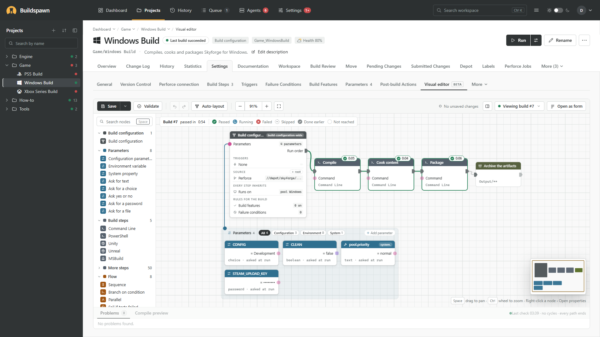

Run view
Watch a running build move through the blocks you drew. The run view lays a build's results over the graph, live.

Open the run view
There are three ways in:
- In the visual editor, open the build menu in the toolbar (it says Last build #7) and pick a build.
- On a build's page, click Visual in the header.
- On the History tab, use the visual link on a build's row.
The toolbar then says Viewing build #N. Choose the build menu again to switch builds or to go back to editing.
The run view needs only permission to see the build configuration. An administrator can switch off the visual links on the History and build pages in the system settings.
Matrix blocks show one cell per combination. The console has a lane chip for each combination, and the build page lists the results in a grid with Re-run for each combination.
Read the run view
A bar above the canvas gives the build's result and time, for example Build #7 passed in 0:54, and the legend. Each block is lit with its state:
| State | Meaning |
|---|---|
| Passed | The step finished well. A green tick and its time. |
| Running | The step runs now. Its time counts up live. |
| Failed | The step failed. It shows the exit code, and Attempt 2 of 4 when it was retried. |
| Skipped | The step did not run because of its execution rule or conditions. |
| Done earlier | On a resumed build: the step passed in an earlier build, which is named. |
| Not reached | The build stopped before this step. |
- Open a step to jump to its block in the build console log.
- On a failed step, Resume from here starts a resumed build at that step. It needs the Build permission. See Resume and retry.
- For a Parallel block on separate machines, each side shows its agent and status, and the main build shows when it waits for the sides or for a slot on its agent.
Keep the run view open on a big screen during a release build: it updates every few seconds while it is visible.